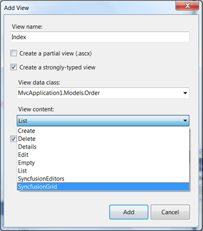
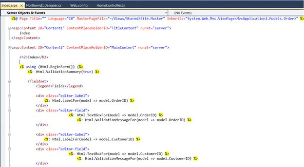
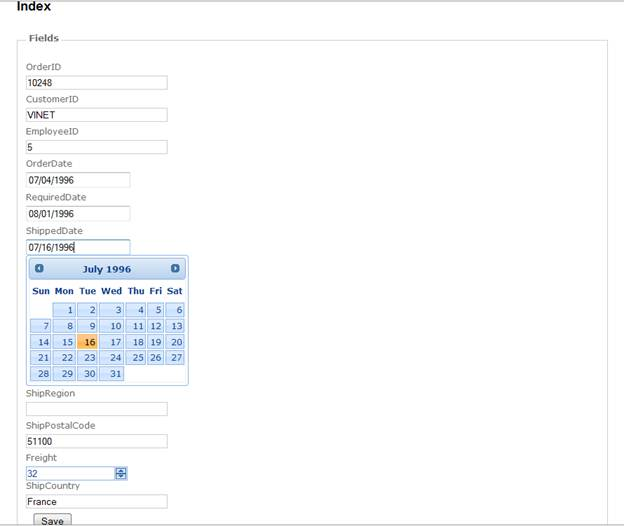

To create an Editor Template using custom Syncfusion T4 Templates, follow the below steps.
16. Open a new Tools MVC Project template which is fully configured for Tools MVC Controls. Refer MVC Project Template.
17. Now, in VisualStudio Project right click Home folder and click Add followed by View. The below image illustrates this.

Figure 25: Adding View
18. To use Editors Template in AddView dialog, select Editors Template from View Content dropdown list as shown below.

Figure 26: Selecting Editors Template
19. In Index.aspx file, controls are decided according to the column types. They are:
· Integer – Numeric Textbox
· DateTime – DatePicker
· String – TextBox

Figure 27: Controls are bounded to Database
20. Refer Tools MVC UG, for further customization.

Figure 28: Editor Controls are rendered in Index page